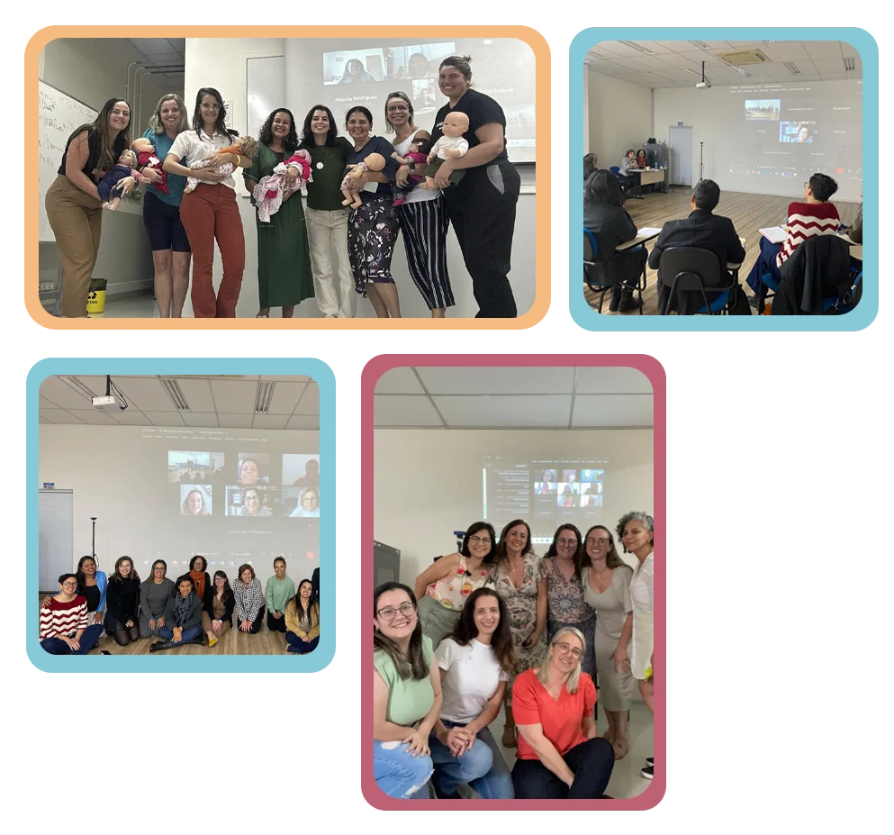
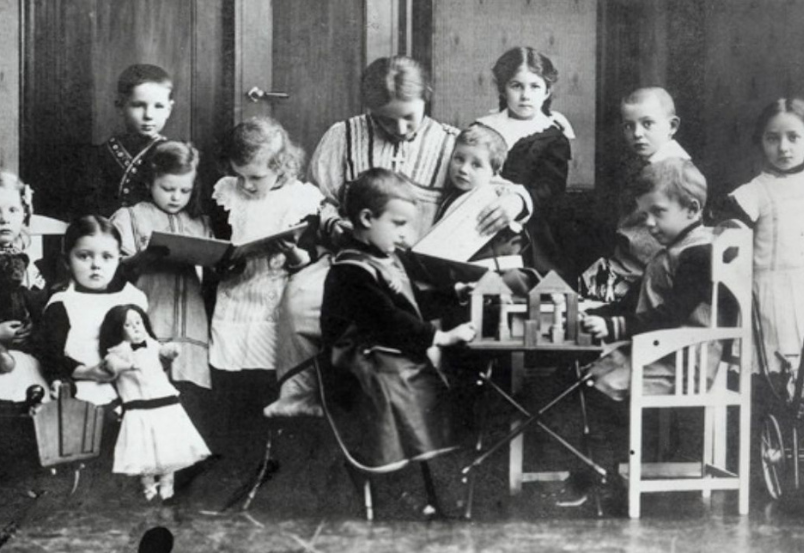
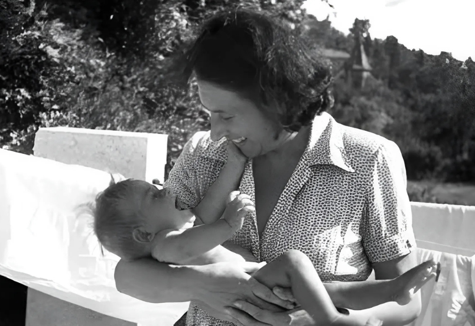
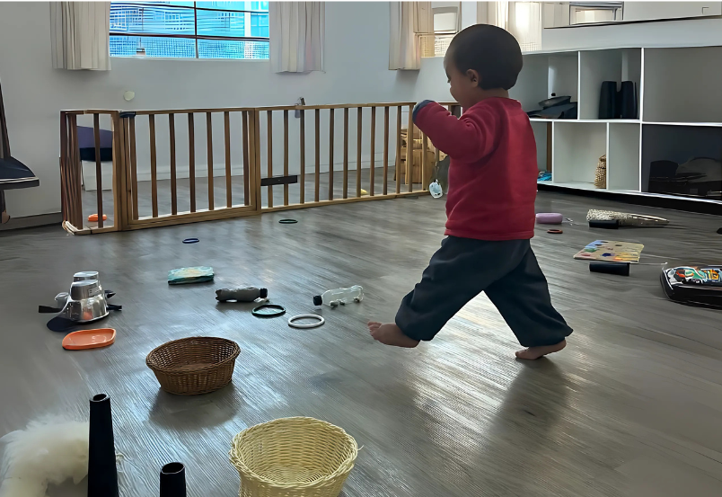
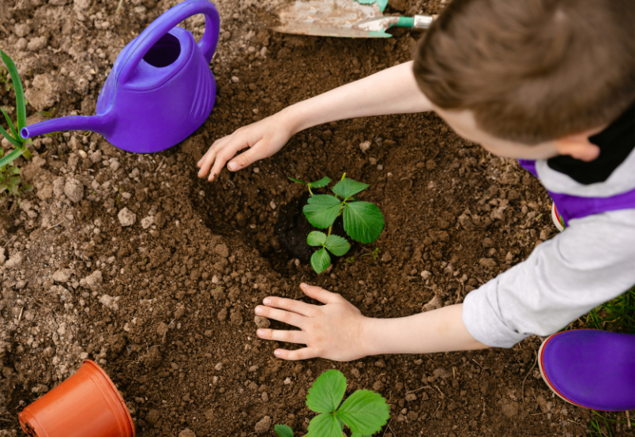
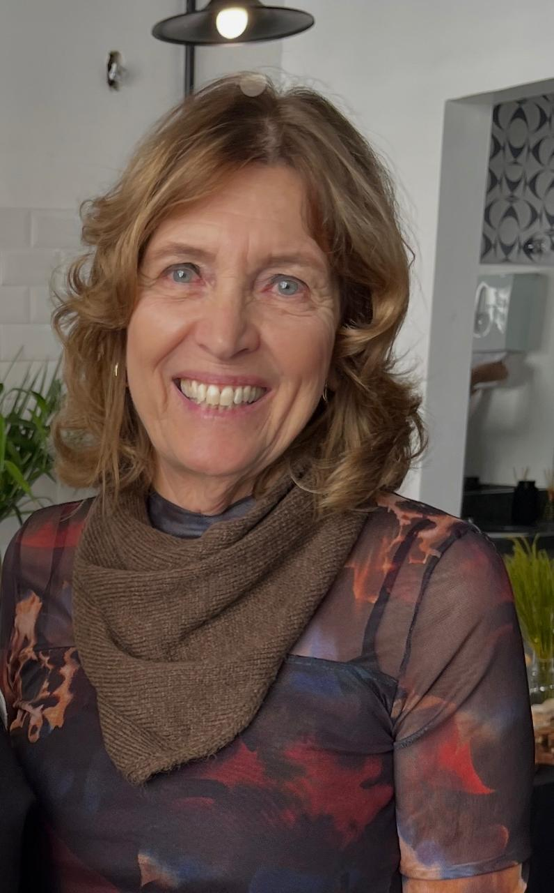

Aporte teórico
compreenda os fundamentos que sustentam a abordagem Pikler e como eles se adaptam a realidade educacional brasileira.
Pós-graduação · Faculdade Phorte
Fortaleça sua atuação profissional com conhecimentos sobre o cuidar e o educar para proporcionar a autonomia dos bebês e crianças bem pequenas.
Uma formação que respeita o tempo, a autonomia e as singularidades de cada criança.

“A criança tem seu próprio ritmo e cabe a nós respeitá-lo”
Os princípios que norteiam a abordagem da Dr.ª Emmi Pikler guiam uma pedagogia que acompanha o desenvolvimento dos bebês e das crianças bem pequenas respeitando as suas singularidades e ritmos.
A Pós-graduação em Educação Infantil numa Perspectiva Pikleriana propõe qualificar as práticas de cuidado e educação para profissionais que atuam ou desejam atuar na construção progressiva da autonomia.
Conheça a estrutura do cursoConheça a formação
Aperte o play no vídeo para entender como os coordenadores Cristiano Alcântara, Maria Helena Pelizon e Bete Godoy estruturam essa formação.
compreenda os fundamentos que sustentam a abordagem Pikler e como eles se adaptam a realidade educacional brasileira.
entenda como criar vínculos afetivos para estabelecer relações de confiança e dar segurança aos bebês e crianças.
organize espaços e rotinas de acordo com os fundamentos de Emmi Pikker para favorecer a aprendizagem e o conforto.
favoreça a brincadeira, a autoconfiança e a exploração para promover criatividade e respeitar o ritmo de cada criança.
Estude de casa, unindo a flexibilidade do EAD e a potencialidade das interações com seus professores.
Equipe formada por profissionais com vasta experiência na gestão e docência em educação infantil, com ênfase na Perspectiva Pikleriana.
Abordagem pedagógica que combina teorias fundamentais com atividades práticas individuais e em grupo, promovendo a aplicação dos conhecimentos adquiridos.
Foco no desenvolvimento infantil integral, abordando aspectos neuropsicossociológicos que favorecem uma visão holística da criança.
Conclusão do curso com a elaboração de um artigo que contribua para o avanço dos estudos e das práticas pedagógicas voltadas à educação infantil.
Em apenas 8 módulos você transformará a visão que você tem sobre os bebês e as crianças pequenas

Conheça a história da Educação Infantil no Brasil: da luta pelos direitos das mulheres à inclusão de creches na Educação Básica pela Constituição Brasileira de 1988. Aprenda a origem dos princípios Piklerianos e como eles ajudam a construir uma vivência educacional respeitosa e acolhedora.
Com uma profunda compreensão dos conceitos-chave da abordagem você vai aprender como promover a motricidade livre dos bebês, a autonomia, segurança e desenvolvimento natural das crianças sob seus cuidados.

Saiba a importância da atenção individualizada e das práticas de cuidado, elementos essenciais para promover um ambiente seguro, acolhedor e estimulante.

Conheça os cinco principais organizadores do desenvolvimento humano e como operam na protoinfancia para construir os processos de gênese, organização, estruturação e transformação evolutiva do indivíduo e de suas especificidades.
Aprenda o que observar, como observar e por que observar para descrever e analisar posturas, pensamentos e estratégias de ações dos bebês em suas explorações e movimentos livres.
Aprenda a selecionar os objetos e brinquedos de acordo com o nível do desenvolvimento dos bebês e das crianças pequenas que promovam a manipulação, exploração, criatividade e a investigação

Aprenda a organizar rotinas e espaços coletivos para criar ambientes que garantam o brincar e a exploração livres, assim como momentos de cuidados pessoais e interações entre crianças de todas as idades e adultos.
Explore e analise documentos oficiais em busca de fundamentos teóricos que sustentem e colaborem na elaboração de um currículo para a Educação Infantil que integre os aportes da Abordagem Pikleriana.
Quer conversar com a equipe sobre a formação?
Quero me especializarEla se destina a profissionais graduados que trabalham ou desejam atuar com educação, aprendizado e/ou desenvolvimento de bebês e crianças bem pequenas dentro de áreas como:
Ao final de cada módulo, os alunos serão avaliados pelos professores, com o propósito de verificar a aplicação prática dos conteúdos ministrados. A cada quatro módulos, os alunos serão avaliados numa aula (virtual/ síncrona), a partir de consultas, questões individuais e em duplas.
Para a conclusão do curso, é necessário:
Cronograma das aulas:
As aulas ocorrerão dois sábados por mês, das 8h às 14h, na modalidade ao vivo/online (síncronas). Em caso de feriados no final de semana, poderá haver três encontros no mês, sendo o ajuste realizado no mês anterior ou posterior.
Pedagoga, Especialista em Fundamentos de uma Educação para o Pensar pela PUC-SP e em Desenvolvimento Infantil Temprano pela Universidade Nacional de Cuyo, em Mendoza, Argentina. É estudiosa das abordagens Pikler, voltada à educação de bebês e crianças de 0 a 3 anos, e Malaguzzi, com ênfase em documentação pedagógica. É também autora do livro Pensando com Sofia, publicado pela Cortez Editora.
Atuou como professora, diretora e coordenadora pedagógica na Rede Municipal de Educação de São Paulo. Atualmente, integra a Comissão de Formação e Pesquisa da Associação Pikler Brasil e a Rede Pikler Nuestra América, além de atuar como assessora pedagógica no Tessituras Centro de Formação e Pesquisa em Educação.
Pós-Doutor em Psicologia da Educação, Doutor em Lingua Portuguesa, Mestre em Ciência da Informação e Documentação, Bacharel em Letras - Português e Literaturas de Língua Portuguesa e Pedagogo em Gestão Escolar. Especialista em PROEJA, Letramento e Alfabetização e Supervisão Escolar.
Atualmente é Coordenador Pedagógico na Cidade de São Paulo e Coordenador dos cursos de graduação em Pedagogia e pós-graduação em Educação Infantil e Registro e Documentação Pedagógica da Faculdade Phorte. Suas principais áreas de atuação são: formação de professores, assessoramento pedagógico e gestão escolar.

CoordenaçãoMestre em Educação, Arte e História da Cultura pela Universidade Presbiteriana Mackenzie. Graduada em Pedagogia pela Faculdade de Filosofia, Ciências e Letras José Olympio e em Ciências Biológicas pela Universidade de São Paulo, com Licenciatura Plena pela Faculdade de Educação da USP. Possui formação complementar em Desenvolvimento Infantil Temprano e na abordagem Pikler-Lóczy.
Possui experiência na área da Educação, com atuação em Educação Infantil, Educação Continuada e Formação de Professores. Sua trajetória inclui estudos e participação em formações e eventos nacionais e internacionais voltados à primeira infância e à abordagem Pikler, especialmente em temas relacionados ao desenvolvimento infantil, ao brincar, à motricidade livre e à formação de profissionais.
“Para que uma criança se desenvolva bem, é necessário que ela se sinta amada, segura e respeitada”
Especialize-se em uma abordagem que respeita os ritmos, a autonomia e as singularidades de bebês e crianças bem pequenas e invista na sua evolução funcional e na sua pontuação em provas de títulos de concursos públicos.
Entenda o investimento:
Taxa de inscrição: R$100,00
Início imediato
Garantir minha vagaqEste formulário mostra a experiência visual. Os dados não são enviados nem armazenados.